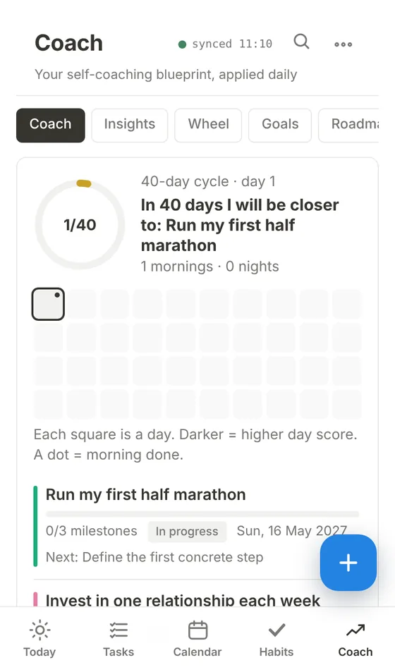
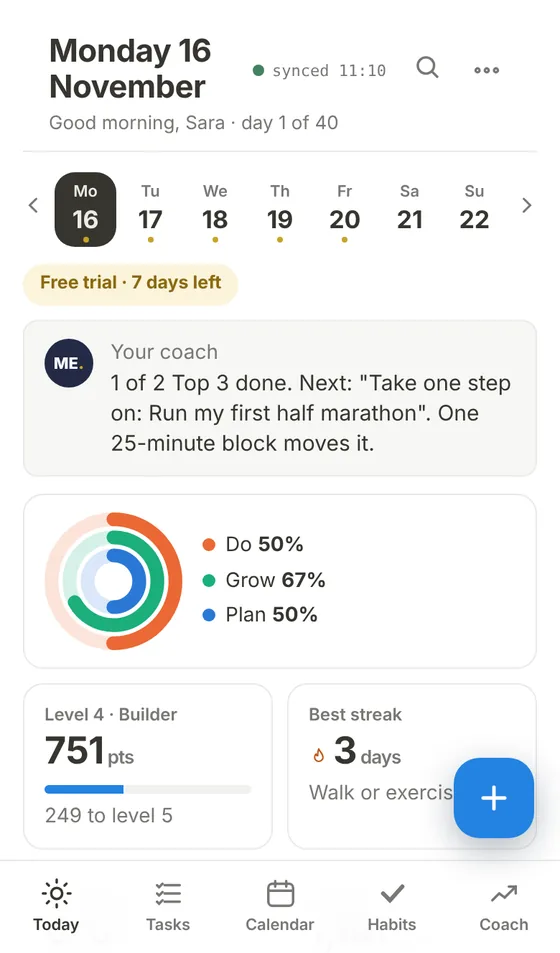
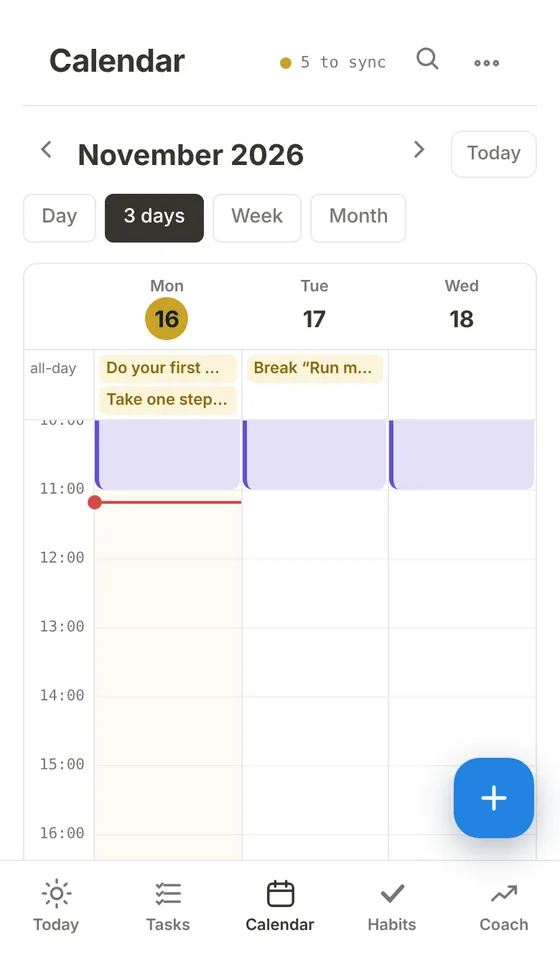
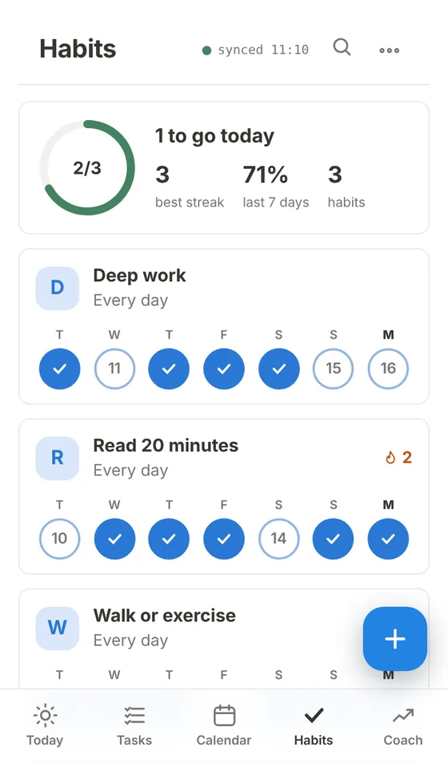
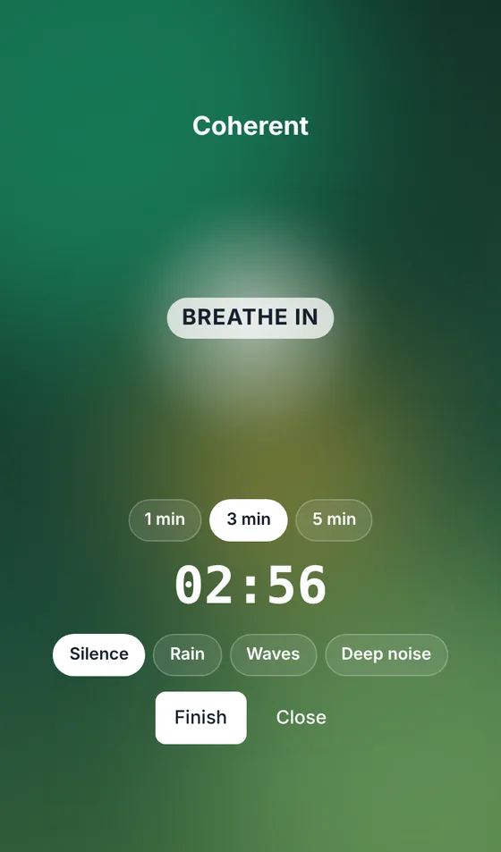
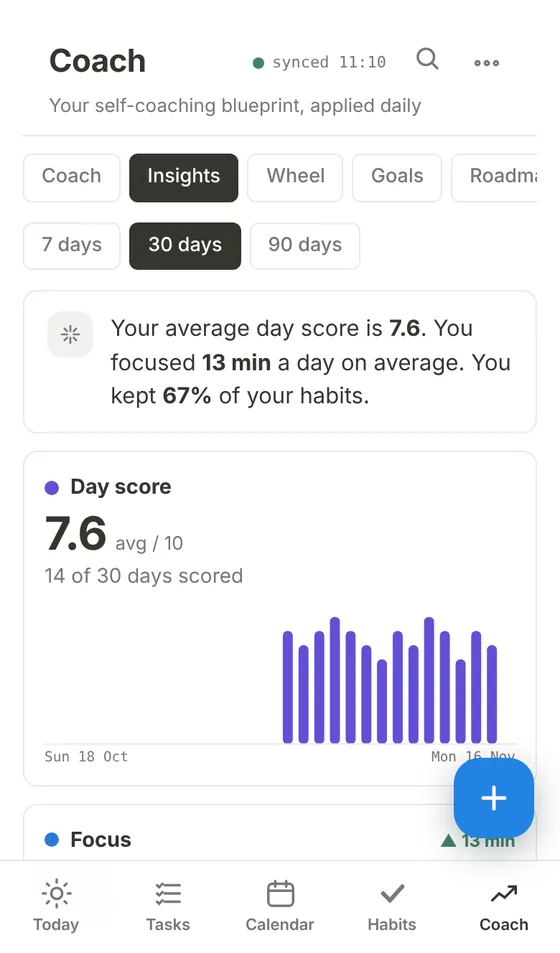
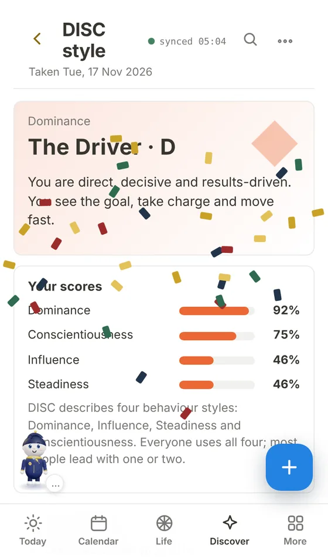
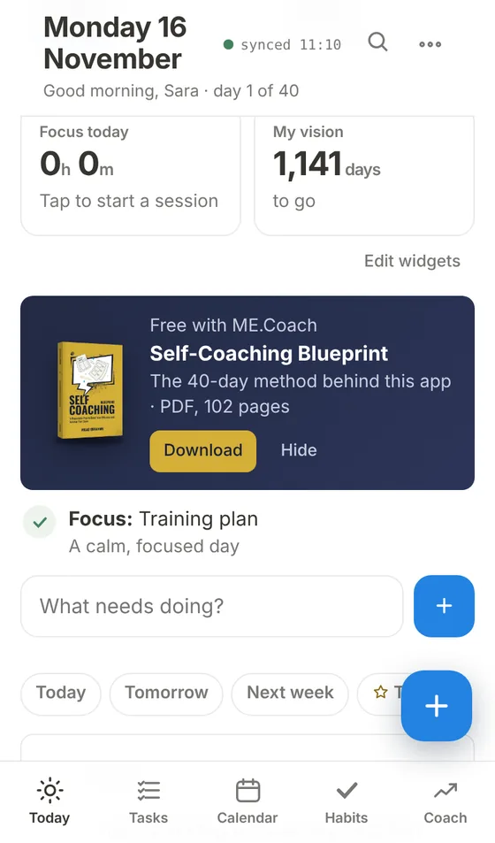

Everything you need to coach yourself
ME.Coach brings the method of Self-Coaching Blueprint into one daily app: test, plan, act, review.
Wheel of Life test
Score the eight areas of your life in two minutes. See your balance as a wheel and watch it change from cycle to cycle.

40-day cycles
Pick one to three areas, set one goal each and commit for 40 days. Long enough to change, short enough to stay focused.

Morning & Night Balance
One minute in the morning to set your focus and Top 3. One minute at night to score the day and plan tomorrow.

Day timeline and calendar
Your day as a visual timeline, plus a calendar that feels like the one you already use. Sync to your phone calendar.

Habits and streaks
Pick the days, tick with one tap, keep your streaks. A 12-week heatmap shows the truth.

Boards for every project
A Trello-style board and a Notion-style table for each project, with its own daily tasks.

Focus and Calm
A calm full-screen focus timer with ambient sound, breathing exercises and short guided reflections.

Insights
Clear charts of your day scores, focus time, habits and balance over 7, 30 or 90 days.

Self-discovery tests
DISC, 16 types, Big Five, Enneagram, career interests, values, conflict style and emotional intelligence. Every result adds to your personal pack.

Career explorer
Turn your experience into a skill fingerprint, see the careers that fit you on a visual map and make the best one your next goal.

Rings, levels and widgets
Close three daily rings, earn points and badges, and keep your progress on your home screen with live widgets.

And the details that make it easy
Face ID and Google sign-in
Passkeys mean no password to remember. Or continue with your Google account.
Installs like an app
Add it to your home screen on iPhone, iPad and Android, or install it on your computer. Works offline.
Phone calendar and Siri
See your plan in Apple or Google Calendar, and add tasks by voice with Siri Shortcuts.
Reminders
A gentle nudge for your Morning and Night Balance, at the times you choose.
Your data, exportable
Download everything as a file at any time, including an encrypted backup.
The book included
The full Self-Coaching Blueprint PDF, free.